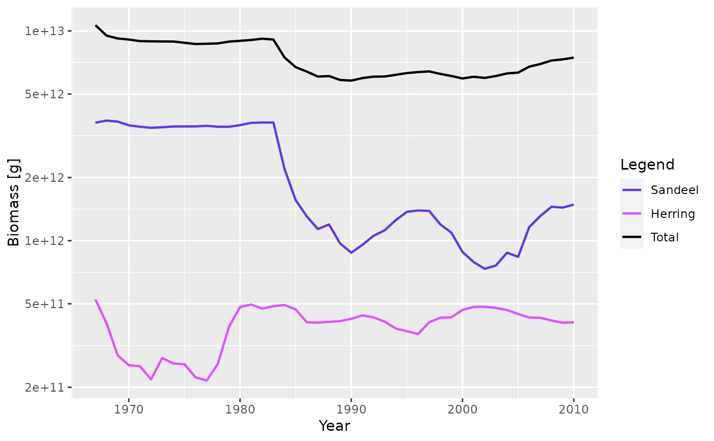

After running a projection, the biomass of each species can be plotted
against time. The biomass is calculated within user defined size limits
(min_w, max_w, min_l, max_l, see getBiomass()).
plotBiomass( sim, species = NULL, start_time, end_time, y_ticks = 6, ylim = c(NA, NA), total = FALSE, background = TRUE, highlight = NULL, return_data = FALSE, ... ) plotlyBiomass( sim, species = NULL, start_time, end_time, y_ticks = 6, ylim = c(NA, NA), total = FALSE, background = TRUE, highlight = NULL, ... )
Arguments
| sim | An object of class MizerSim |
|---|---|
| species | The species to be selected. Optional. By default all target species are selected. A vector of species names, or a numeric vector with the species indices, or a logical vector indicating for each species whether it is to be selected (TRUE) or not. |
| start_time | The first time to be plotted. Default is the beginning of the time series. |
| end_time | The last time to be plotted. Default is the end of the time series. |
| y_ticks | The approximate number of ticks desired on the y axis |
| ylim | A numeric vector of length two providing lower and upper limits for the y axis. Use NA to refer to the existing minimum or maximum. Any values below 1e-20 are always cut off. |
| total | A boolean value that determines whether the total biomass from all species is plotted as well. Default is FALSE. |
| background | A boolean value that determines whether background species are included. Ignored if the model does not contain background species. Default is TRUE. |
| highlight | Name or vector of names of the species to be highlighted. |
| return_data | A boolean value that determines whether the formatted data used for the plot is returned instead of the plot itself. Default value is FALSE |
| ... | Arguments passed on to
|
Value
A ggplot2 object, unless return_data = TRUE, in which case a data
frame with the four variables 'Year', 'Biomass', 'Species', 'Legend' is
returned.
See also
plotting_functions, getBiomass()
Other plotting functions:
animateSpectra(),
plot,MizerSim,missing-method,
plotDiet(),
plotFMort(),
plotFeedingLevel(),
plotGrowthCurves(),
plotPredMort(),
plotSpectra(),
plotYieldGear(),
plotYield(),
plotting_functions
Examples
# \donttest{ plotBiomass(NS_sim)plotBiomass(NS_sim, species = c("Sandeel", "Herring"), total = TRUE)  plotBiomass(NS_sim, start_time = 1980, end_time = 1990)
# Returning the data frame fr <- plotBiomass(NS_sim, return_data = TRUE) str(fr) #> 'data.frame': 528 obs. of 4 variables: #> $ Year : int 1967 1968 1969 1970 1971 1972 1973 1974 1975 1976 ... #> $ Biomass: num 5.08e+10 5.57e+10 5.48e+10 5.32e+10 5.16e+10 ... #> $ Species: Factor w/ 12 levels "Sprat","Sandeel",..: 1 1 1 1 1 1 1 1 1 1 ... #> $ Legend : Factor w/ 12 levels "Sprat","Sandeel",..: 1 1 1 1 1 1 1 1 1 1 ... # }